Sesión 5. Serie y paralelo: objetivo
Sesiones 5–6
Sesión 5 · Serie y paralelo
Al terminar debes distinguir ambas asociaciones y calcular la resistencia equivalente, la intensidad y el reparto de tensiones sin confundir qué magnitud se conserva.
Cuando diseñemos un circuito eléctrico en el que tengan que funcionar diferentes receptores, habrá que conectarlos en diferentes configuraciones según las necesidades de funcionamiento. En general, los receptores pueden conectarse de dos maneras diferentes: en serie y en paralelo. Sin embargo, es muy habitual que en un mismo circuito haya receptores conectados de las dos formas y, en ese caso, decimos que tenemos un circuito mixto.
Ya has estudiado estas formas de agrupar a los receptores en Tecnología de ESO, así que vamos a recordar brevemente las características de cada montaje y la manera de calcular la resistencia equivalente de cada uno.
Sesión 5. Asociación en serie
Cuando conectamos los receptores de manera que el terminal de salida de uno de ellos se conecta con el de entrada del siguiente, decimos que están conectados en serie.
Se trata de que solo haya un camino único para la corriente eléctrica, que le haga atravesar a todos los receptores antes de volver al generador. Es importante que no haya ninguna derivación que salga de entre dos receptores, en cuyo caso el circuito no estaría en serie.
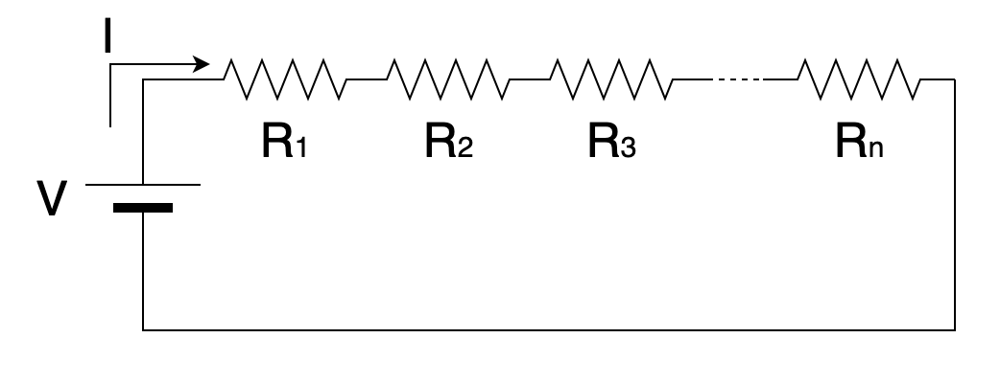
En un circuito de este estilo la corriente eléctrica que atraviesa cada receptor es la misma (la que sale del generador), pero el voltaje del generador se reparte entre todos los receptores. Por eso a estos circuitos serie puros se les puede llamar también divisores de tensión.
\[V=V_{1}+V_{2}+V_{3}+\cdots +V_{n}\Rightarrow \mbox{El voltaje se reparte}\]
\[I=I_{1}=I_{2}=I_{3}=\cdots =I_{n}\Rightarrow \mbox{La intensidad es la misma}\]
Para calcular la resistencia equivalente de un grupo de receptores conectados en serie, simplemente tenemos que sumar las resistencias eléctricas de todos los receptores.
\[R_{EQ}=R_{1}+R_{2}+R_{3}+\cdots +R_{n}=\sum_{i=1}^{n}R_{i}\]
Sesión 5. Asociación en paralelo
Cuando conectamos los receptores de manera que unimos todos los terminales de entrada entre sí y todos los terminales de salida entre sí, decimos que están conectados en paralelo.
Se trata de que todos los receptores tengan exactamente el mismo voltaje, porque quedarán con su terminal de entrada conectado al positivo del generador y el de salida al negativo. Es importante que los dos terminales de cada receptor estén unidos entre sí; si uno de ellos se une a otra parte del circuito diferente, ya no estarán conectados en paralelo.
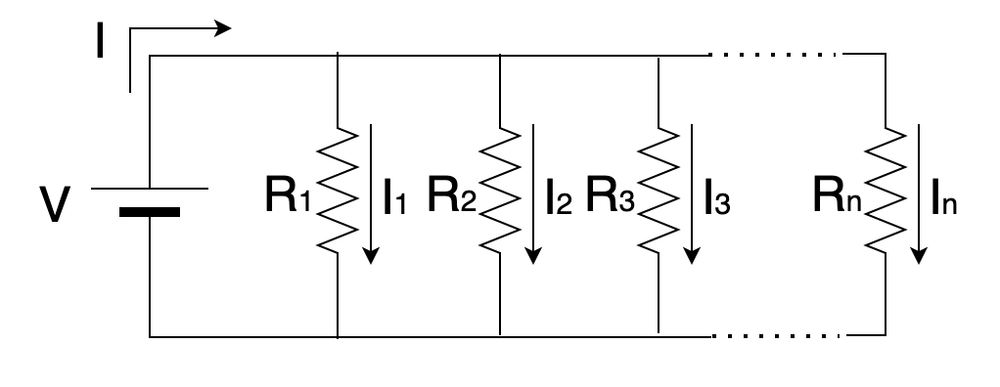
En un circuito de este estilo la tensión eléctrica entre los terminales de cada receptor es la misma (la del generador), pero la corriente que sale del generador se reparte entre todos los receptores. Por eso a estos circuitos paralelos puros se les puede llamar también divisores de intensidad.\[V=V_{1}=V_{2}=V_{3}=\cdots =V_{n}\Rightarrow \mbox{El voltaje es el mismo}\]
\[I=I_{1}+I_{2}+I_{3}+\cdots +I_{n}\Rightarrow \mbox{La intensidad se reparte}\]
Para calcular la resistencia equivalente de un grupo de receptores conectados en paralelo, lo que se suma ahora no son las resistencias, sino las inversas de las resistencias.
\[ \frac{1}{R_{EQ}}=\frac{1}{R_{1}}+\frac{1}{R_{2}}+\frac{1}{R_{3}}+\cdots +\frac{1}{R_{n}}=\sum_{i=1}^{n}\frac{1}{R_{i}} \Rightarrow R_{EQ}=\frac{1}{\sum_{i=1}^{n}\frac{1}{R_{i}}}
\]
Sesión 6. Circuitos mixtos: método
Sesión 6 · Circuitos mixtos
Trabajaremos un método repetible: identificar una asociación, sustituirla por su equivalente, redibujar y continuar hasta obtener una sola resistencia.
Como ya hemos comentado, en general los circuitos pueden contener receptores conectados tanto en serie como en paralelo. Estos circuitos se denominan circuitos mixtos y, para calcular la resistencia equivalente, no disponemos de una fórmula directa como antes sino que depende de cada caso particular.
Para fijar ideas, vamos a ver un ejemplo de cálculo de la resistencia equivalente de un circuito mixto, lo que nos permitirá calcular la corriente que sale de la batería y, sabiendo su capacidad, calcular el tiempo que tardará en descargarse. Es importante que, si tienes que resolver un ejercicio de este estilo, procedas como te indico aquí para minimizar los posibles errores durante la resolución.
Ejemplo resuelto
Dado el circuito de la figura, con los valores indicados, calcular la resistencia equivalente y el tiempo que tardará en descargarse la pila si tiene una capacidad de 3500 mAh:
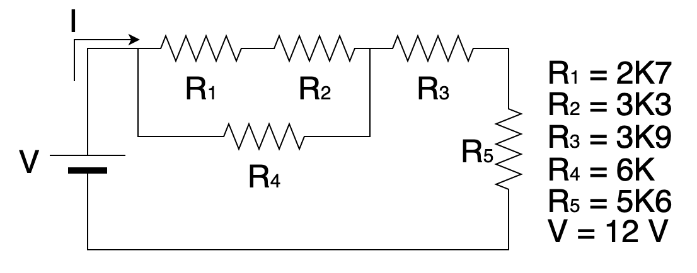
Abrir el desarrollo completo del ejemplo
Lo que debemos hacer primero es inspeccionar el circuito para buscar resistencias que estén en serie o en paralelo. Algunas cosas que debes tener en cuenta:
- R1 y R2 están en serie entre sí, pero R3 no está en serie con ellas, porque hay una derivación entre R2 y R3.
- Ni R1 ni R2 están en paralelo con R4, porque la entrada de R4 se conecta a la entrada de R1, pero la salida de R4 se conecta a la salida de R2 (no de R1)
- R3 y R5 están en serie, porque están conectadas una a continuación de la otra sin que haya derivación en medio. Da igual que el cable "se doble", mientras no haya una conexión que se lleve parte de la corriente a otra parte.
Una vez identificadas las asociaciones serie y/o paralelo, las marcamos sobre el circuito y le damos un nombre a la resistencia equivalente que tendrá cada asociación, así:
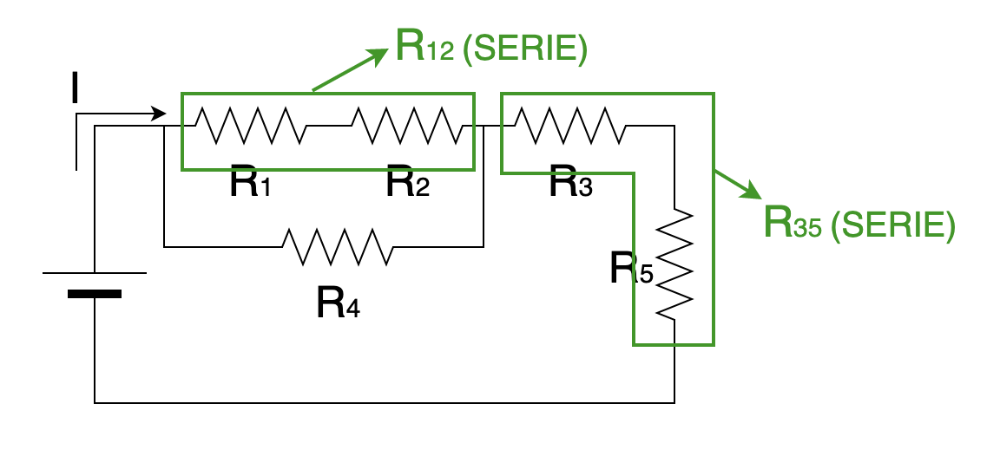
A continuación, volvemos a copiar el circuito, sustituyendo las asociaciones identificadas por la resistencia equivalente de cada una:
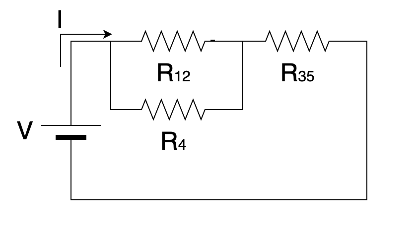
Si nos fijamos ahora en el circuito vemos que:
- R12 está en paralelo con R4, porque los terminales de entrada de ambas resistencias están conectadas entre sí, al igual que los terminales de salida.
- R12 y R35 no están en serie, porque hay una derivación entre ambas.
Con estas consideraciones, marcamos y nombramos la única asociación que hay:
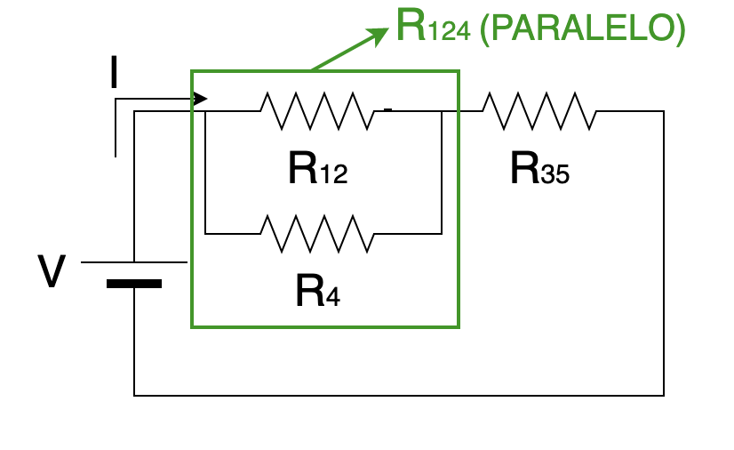
De nuevo copiamos el circuito sustituyendo las resistencias marcadas por su resistencia equivalente: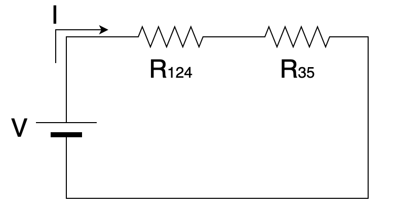
Ya está muy claro que las dos resistencias que quedan están en serie. Fíjate que, cuando llegamos a la última resistencia, ya le llamamos REQ (resistencia equivalente de todo el circuito) y no seguimos con los subíndices: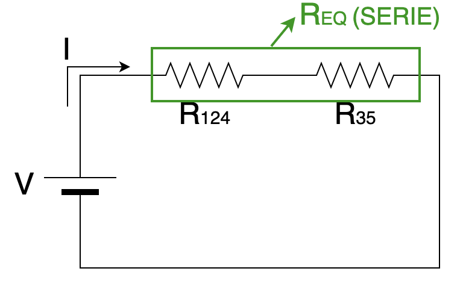
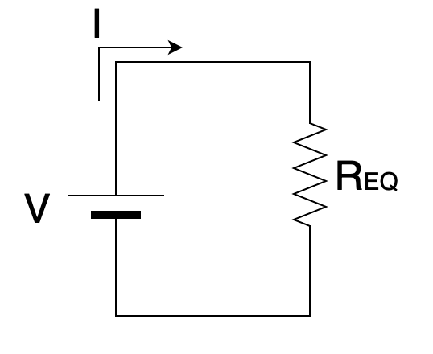
Una vez hemos reducido el circuito a una sola resistencia equivalente, llega el momento de realizar los cálculos. Tenemos que ir calculando las resistencias equivalentes que hemos ido identificando, por orden.
| R12 (SERIE DE R1 Y R2) | \[R_{12}=R_{1}+R_{2}=2,7 +2,3 =\mathbf{6\ k\Omega}\] |
| R35 (SERIE DE R3 Y R5) | \[ R_{35}=R_{3}+R_{5}=3,9 +5,6 =\mathbf{9,5\ k\Omega} \] |
| R124 (PARALELO DE R12 Y R4) | \[ \frac{1}{R_{124}}=\frac{1}{R_{12}}+\frac{1}{R_{4}}=\frac{1}{6}+\frac{1}{6}=\frac{1}{3}\Rightarrow \mathbf{R_{124}=3\ k\Omega} \] |
| REQ (SERIE DE R124 Y R35) | \[ R_{EQ}=R_{124}+R_{35}=3+9,5=\mathbf{12,5\ k\Omega} \] |
Una vez calculada la resistencia equivalente, nos falta calcular el tiempo que tardará en descargarse la batería. La capacidad de carga de una batería es la cantidad de carga que es capaz de almacenar. Recordando la fórmula que relaciona la carga con la intensidad de corriente eléctrica, podemos despejar el tiempo que nos piden:
| \[I=\frac{q}{t}\Rightarrow t=\frac{q}{I}=\frac{\mbox{Carga de la bateria}}{\mbox{Intensidad de corriente}}\] |
Así pues, para calcular el tiempo pedido necesitamos la intensidad que sale de la batería. Es trivial calcularla si aplicamos la ley de Ohm en el último circuito que dibujamos antes (en el que nos quedaba una sola resistencia):
| \[\mbox{Ley de Ohm:}\ I=\frac{V}{R_{EQ}}=\frac{12\ V}{12,5\ k\Omega}=\mathbf{0,96\ mA}\] |
Sustituyendo este valor en la fórmula anterior, calculamos el tiempo de descarga:
| \[\require{cancel}t=\frac{q}{I}=\frac{3500\ \cancel{mA}\cdot h}{0,96\ \cancel{mA}}=\mathbf{3645,83\ h}\] |
Como puedes observar, los miliamperios se van y quedan horas. El resultado sería aceptable tanto en horas como en días.
Sesión 6. Taller de circuitos mixtos
Para practicar, calcula, para cada uno de los circuitos indicados, la resistencia equivalente, la intensidad de corriente que sale de la fuente de alimentación y la potencia disipada por el circuito:
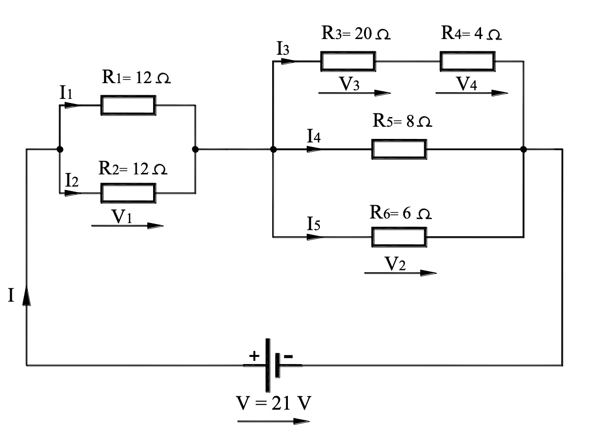
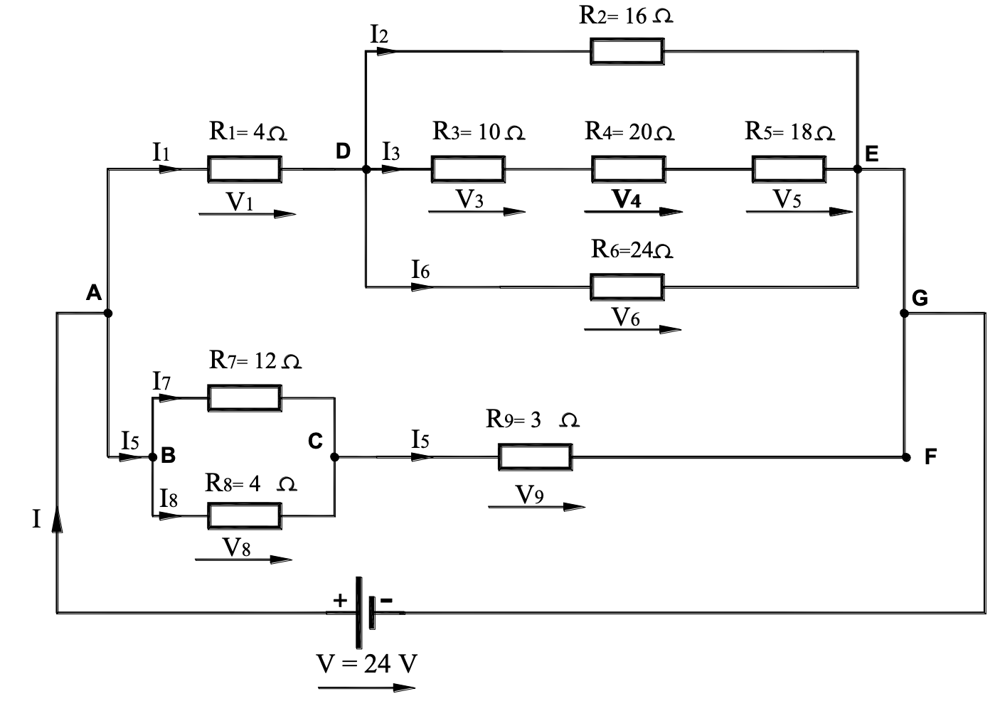
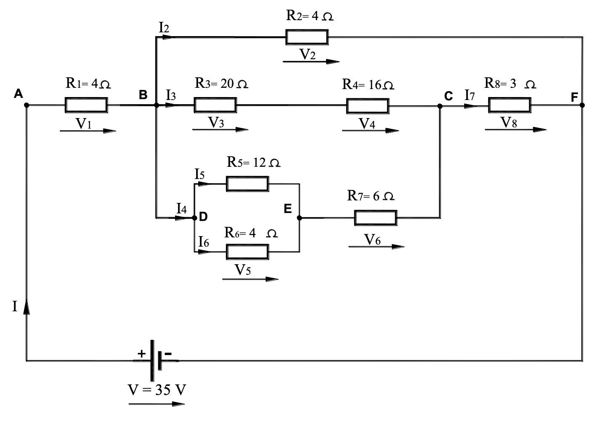
Test
Identifica primero la asociación y qué magnitud se conserva. Después calcula la resistencia equivalente y el reparto de tensión o corriente.
Lista desordenada
Ordena el procedimiento para resolver un circuito mixto sin saltarte el redibujado ni la recuperación de las magnitudes de cada receptor.
- Marcar los nudos y localizar una asociación serie o paralelo inequívoca
- Calcular la resistencia equivalente de esa asociación
- Redibujar el circuito sustituyendo solo esa asociación por su equivalente
- Repetir reducción y redibujado hasta obtener una única resistencia equivalente
- Calcular la corriente total con la tensión de la fuente y la resistencia equivalente
- Deshacer las reducciones en orden inverso para obtener tensiones e intensidades de cada receptor
- Comprobar reparto de corrientes, suma de tensiones y balance de potencia